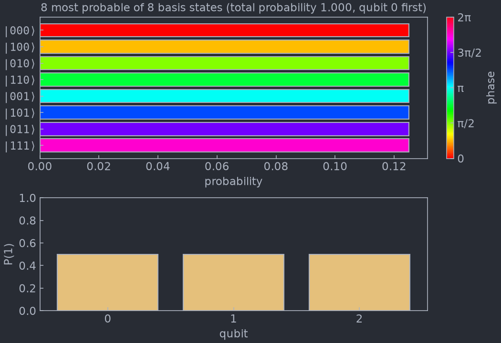

Visualization¶
exaqt.visualization draws a state vector, and can keep a window open that
follows a state while you evolve it:
plotstatereturns a matplotlib figure of a state at one moment.StateWindowis a window that moves gradually to the new state each time you callupdate().
Both read the state in place and never copy it (see Memory and speed).
Installation¶
The plots need matplotlib, which the base install leaves out. The
visualization extra adds it:
The extra installs mimiqcircuits[visualization], so the plots use the same
matplotlib version range and the same MIMIQ style as
mimiqcircuits.visualization.plothistogram. import exaqt alone never loads
matplotlib; the module is imported only when you ask for it:
A StateWindow also needs a GUI
toolkit for matplotlib to draw into; see Windows and backends.
plotstate does not.
Plotting a state: plotstate¶
import mimiqcircuits as mc
from exaqt import ExaqtState, evolve
from exaqt.visualization import plotstate
# H on every qubit gives all 8 basis states the same probability, 1/8.
# T, S and Z then add a phase of π/4, π/2 and π for each qubit set to 1,
# so basis state i (qubit 0 as the lowest bit) ends up with phase i·π/4.
c = mc.Circuit()
for q in range(3):
c.push(mc.GateH(), q)
c.push(mc.GateT(), 0)
c.push(mc.GateS(), 1)
c.push(mc.GateZ(), 2)
state, _ = evolve(ExaqtState.zero(3), c)
fig = plotstate(state)
fig.savefig("phases.png")

Reading the plot¶
Top panel: the most probable basis states. One bar per basis state, most probable first.
- The bar length is the probability
|⟨i|ψ⟩|². - The bar colour is the phase of the amplitude, read on the colour bar on the right. Phase is cyclic, so the colour map is too: a phase just below 2π and a phase just above 0 get nearly the same colour. Two states with the same probability and different phases, as above, are told apart only by colour.
- States of equal probability come in basis order.
- The title gives how many states are listed and the total probability they carry. When that total is well below 1, the state is spread over more basis states than the plot lists.
Bottom panel: P(1) for each qubit. The probability of measuring 1 on
each qubit on its own. It stays readable when 2**n is far too many
amplitudes to list: a qubit at 0 or 1 is in a definite state, a qubit near 0.5
is maximally uncertain.
Bitstrings list qubit 0 first, as mimiqcircuits.BitString does: |100⟩
is qubit 0 set, the others clear. That is the basis state of index 1, since
qubit 0 is the lowest bit of the index.
Options¶
| Argument | Default | Effect |
|---|---|---|
num_states |
15 |
Maximum number of basis states listed. |
mimiqstyle |
True |
Draw in the MIMIQ matplotlib style; False keeps your active style. |
In notebooks and scripts¶
plotstate returns a matplotlib.figure.Figure.
- In a notebook, a call on the last line of a cell displays the figure
once. Assigned to a variable (
fig = plotstate(state)), it displays nothing until you showfig. - In a script, save it with
fig.savefig(...), or open it withmatplotlib.pyplot.show().
Watching a state evolve: StateWindow¶
StateWindow opens a window on a state and redraws it only when you call
update(). Each update reads the state as it is then, and moves the picture
there gradually over about a second. Between two updates you evolve the state
by as many gates as you like, so you choose when to look.
import matplotlib.pyplot as plt
import mimiqcircuits as mc
from exaqt import ExaqtState, evolve
from exaqt.visualization import StateWindow
state = ExaqtState.zero(4)
window = StateWindow(state) # opens on |0000>
# One layer: an RY on every qubit, then a CX ladder.
layer = mc.Circuit()
for q in range(4):
layer.push(mc.GateRY(0.4), q)
for q in range(3):
layer.push(mc.GateCX(), q, q + 1)
for _ in range(5):
evolve(state, layer) # evolve in place, any number of gates...
window.update() # ...then animate to where the state is now
plt.show() # keep the window open at the end
The window keeps a reference to state and reads it at every update(), so
evolve that same object in place, as evolve does. It never modifies the
state.
What an update animates¶
The window shows what plotstate shows. During an update:
- bars grow or shrink to their new probability and slide to their new rank;
- bar colours turn to the new phase, the short way round the colour wheel;
- basis states that leave the list fade out where they stand, and those that join it fade in at their new rank;
- the
P(1)bars and the probability axis move to their new values.
The animation follows the clock: if the window redraws slowly it shows fewer frames, but still takes the time asked for.
update()¶
window.update() # animate over the window's duration
window.update(duration=0.3) # a quicker transition
window.update(duration=0) # jump straight to the new picture
update() always reads the state the window was created on. To watch
another state, open another window.
| Argument | Default | Effect |
|---|---|---|
duration |
the window's | Length of the animation in seconds; 0 jumps straight to the new picture. |
StateWindow(state, num_states=15, mimiqstyle=True, duration=1.0) takes the
same num_states and mimiqstyle as plotstate, and duration sets the
default length of an update.
update() raises RuntimeError once the window has been closed; open a new
StateWindow to continue.
Windows and backends¶
A window needs an interactive matplotlib backend, which in turn needs a GUI
toolkit installed. The toolkit belongs to your environment, so the
visualization extra does not install one:
- Tk comes with most Python installs (python.org, Windows, conda, most Linux distributions), and matplotlib uses it with no setup.
- Qt works with
pip install PyQt6orpip install PySide6. Use it where Python was built without Tk, as Homebrew's is.
Where the window is drawn from matters:
- In a script, the window repaints only while
update()runs. Between two updates it shows the last frame but does not respond to resizing. End the script withplt.show()to keep the window open and responsive, or pause withplt.pause(seconds)between updates. - In Jupyter, run
%matplotlib qt(or%matplotlib tk) before creating the window. The notebook's default inline backend draws static images, which cannot animate. - With a non-interactive backend (
Agg, inline), nothing opens andupdate()redraws the figure in one step. Nothing fails, so the same code runs in tests and on headless machines.
Memory and speed¶
Neither plotstate nor StateWindow.update() copies the state vector. Both
read it through ExaqtSV.summary(k), one parallel pass that collects the
k most probable basis states and P(1) of every qubit together.
The extra memory is proportional to num_states, not to 2**n, and a plot
costs about as much as reading the state once: 0.25 s on a 28-qubit state
(4 GiB). A StateWindow makes that pass at every update(), and none in
between.
The same call gives you the numbers without plotting anything:
# The 5 most probable basis states (most probable first), P(1) of every
# qubit, and the squared norm, all from one pass over the state.
indices, amplitudes, p1, norm2 = state.q.summary(5)
Limits¶
- Dynamic qubits. A state built with
dynamic_qubits=Trueis refused withValueError: its buffer is stored in a permuted qubit order, so bitstring labels would name the wrong qubits. - GPU state vectors. Only CPU states can be plotted for now: a state on
an
ExaqtSVGpuis refused withTypeError.